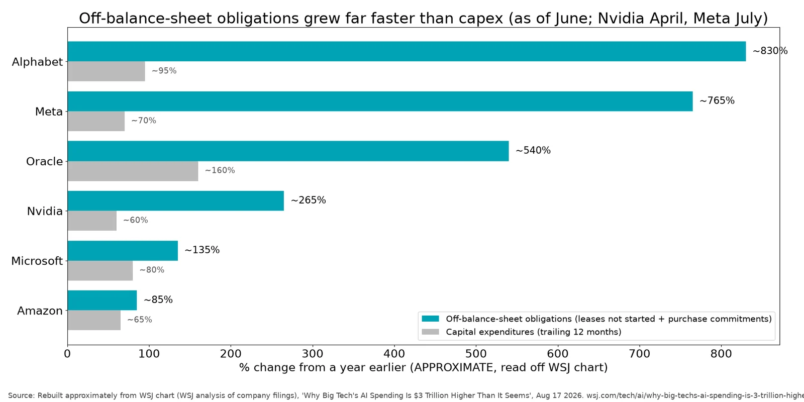
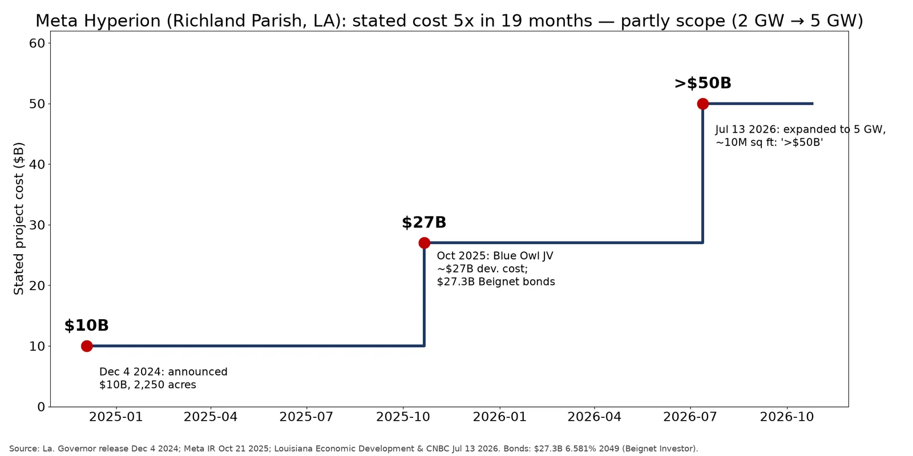

Q6. Video Claims Checked

- CONFIRMED: the WSJ found about $3T of off-balance-sheet commitments across nine top tech companies, mostly AI-related. The WSJ article is by Rudegeair & Santilli, Aug 17 2026. An independent 10-Q tally by edgarstat counts $1.21T of uncommenced leases plus $1.90T of purchase commitments, $3.25T in total, about 3.6x on-balance-sheet debt and leases. (source) (source) (source) (source)
- PARTLY CONFIRMED: the WSJ 'percentage change from a year earlier' chart shown at 15:03, as read approximately from the frame: Alphabet ~830%, Meta ~765%, Oracle ~540%, Nvidia ~265%, Microsoft ~135%, Amazon ~85%, against capex growth of roughly 60–160%. The chart's note says the data is as of June (Nvidia April, Meta July). The WSJ article itself is paywalled, so the exact values are unverified. (source) (source)
- PARTLY CONFIRMED: Moody's (Gonzales & Drake, Feb 2026) wrote that hyperscalers' AI lease commitments 'may understate economic risk'. It counted $662B of uncommenced leases, equal to 113% of adjusted debt, and warned of possible debt adjustments. Moody's frames this as reporting deferral under GAAP, not as 'aggressive' accounting; that word comes from the WSJ's Jonathan Weil. (source) (source) (source) (source)
- UNCONFIRMED / OPINION: 'reporting zero liabilities' and 'not being rated accurately'. The lease commitments and RVGs are disclosed in footnotes; they are off the balance sheet but not hidden. Ratings are disputed: S&P rates Beignet A+, while Moody's signals possible debt adjustments. (source) (source)
Source: Rebuilt approximately from WSJ chart (WSJ analysis of company filings), Aug 17 2026.
https://www.wsj.com/tech/ai/why-big-techs-ai-spending-is-3-trillion-higher-than-it-seems-e1067bb2

- CONFIRMED (figures): Hyperion was announced at $10B on Dec 4 2024. The Blue Owl JV in Oct 2025 put total development costs at about $27B and was financed with $27.3B of Beignet notes. On Jul 13 2026 Meta committed more than $50B. (source) (source) (source) (source) (source) (source)
- PARTLY CONFIRMED (interpretation): the video calls this 'scope creep' that more than doubled costs and says the news was 'buried'. In fact the scope itself grew: from 2,250 acres and 4M sq ft to 3,200+ acres, about 10M sq ft and 5 GW. That makes it a mix of expansion and higher cost per GW, not a like-for-like overrun. The July news was announced at a press event with the Louisiana governor and reported by the WSJ and CNBC, so it was not buried. The fair point stands: no financing partner has been named for the extra ~$23B. (source) (source) (source) (source)
- CONFIRMED: Meta's auditor, EY, made the Hyperion JV a critical audit matter in the FY2025 10-K. The issue was Meta's judgment that it is not the primary beneficiary of the joint venture, which keeps the JV unconsolidated. The 10-K also shows a $12.31B lease commitment, a ~$28B declining RVG threshold and $45.95B of maximum exposure. A critical audit matter flags hard judgment, not an error. (source) (source) (source) (source)
Source: La. Governor release Dec 4 2024; Meta IR Oct 21 2025; Louisiana Economic Development & CNBC Jul 13 2026.
https://gov.louisiana.gov/news/4697 https://investor.atmeta.com/investor-news/press-release-details/2025/Meta-Announces-Joint-Venture-with-Funds-Managed-by-Blue-Owl-Capital-to-Develop-Hyperion-Data-Center/default.aspx https://www.opportunitylouisiana.gov/news/meta-commits-more-than-50-billion-for-north-louisiana-project-becoming-one-of-the-largest-data-centers-in-history